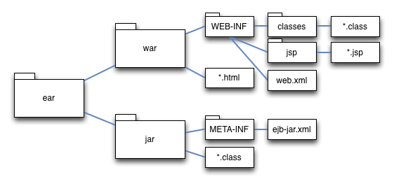
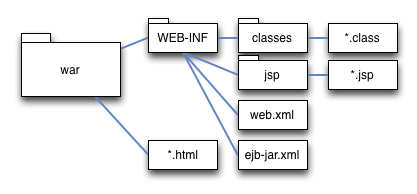

Les spécifications jee sont censées couvrir tous les besoins "entreprise".
Les enterprise java beans sont au coeur des serveurs d'application : ils composent les couches métier de l'application.
La version 3.1 (jee 6) facilite énormément l'écriture d'EJBs.
Une conteneur d'EJBs propose de nombreux services :
@Entity) : les entités pour la persistance de données (lié a JPA)@Singleton : les services sans état@Stateless : les services sans état (disponibles dans un pool)@Stateful : les services avec état conversationel (gestion de session)@MessageDriven) : consommateurs de messages asynchronesLes EJBs ont longtemps été une spécification lourde à respecter.
Avec la version 3.1, ils ressemblent beaucoup à des composants spring.
Cependant, il faut un conteneur d'application pour les EJBs alors qu'une simple jvm suffit à spring.
La sous spécification EJB Lite (EJB 3.1) est une version édulcorée des EJBs.
C'est un compromis entre conteneur de servlet et serveur d'application
| Feature | EJB Lite | EJB |
|---|---|---|
| @Stateless | ||
| @Stateful | ||
| @Singleton | ||
| @MessageDriven | ||
| No interfaces | ||
| Local interfaces | ||
| Remote interfaces | ||
| Web service interfaces | ||
| @Asynchronous | ||
| @Schedule | ||
| Timer service | ||
| Interceptors | ||
| Declarative security | ||
| Declarative transactions | ||
| Programmatic transactions | ||
| EJB 2.x support | ||
| CORBA interoperability |
Avant les EJBs 3.1, il était obligatoirement compliqué.
Avec la spécification 3.1, pour une application web, un simple war suffit.
C'est une simplification majeure dans l'histoire des EJBs.